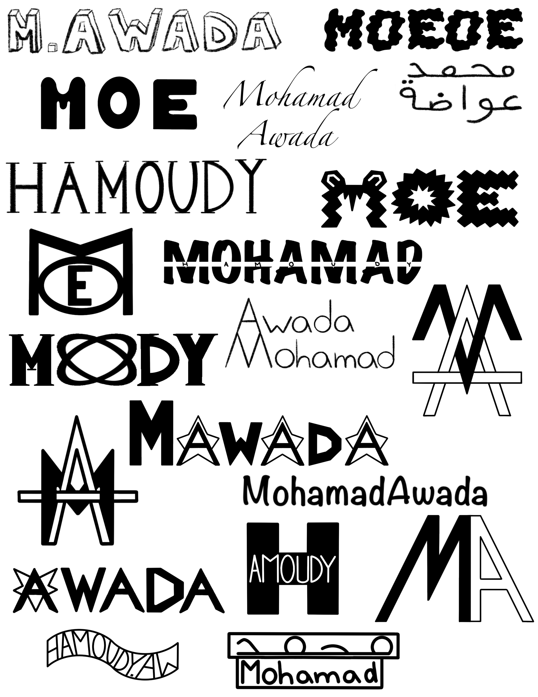

Mohamad Awada
Hi! My name is Mohamad Awada, and here you'll learn about my work, skills, and professional capabilities! Click to learn more about me.
My Recent Works

This photo on the left is a project that I did for my visual design class, in which we had to create a personal ID which we believed represented us accurately. On the right is a photo of me that I took in my digital media class while cultivting my photgraphy skills.
What I'm Working On Now
A few things that I'm working on right now:
- A short film about facing life's stresses as a young adult
- Developing a strong understanding of web development fundamentals
- Working on improving my skills and expanding my knowledge of graphic design
Some of the industry standard software and programs that I've been using to cultivate these skills include:
- Git and Github
- Adobe Illustrator
- Adobe Premiere Pro
| Git and Github | Adobe Illustrator | Adobe Premiere pro | Other programs |
|---|---|---|---|
| 30% | 15% | 25% | 10% |